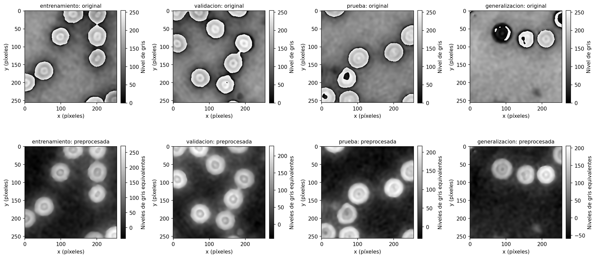
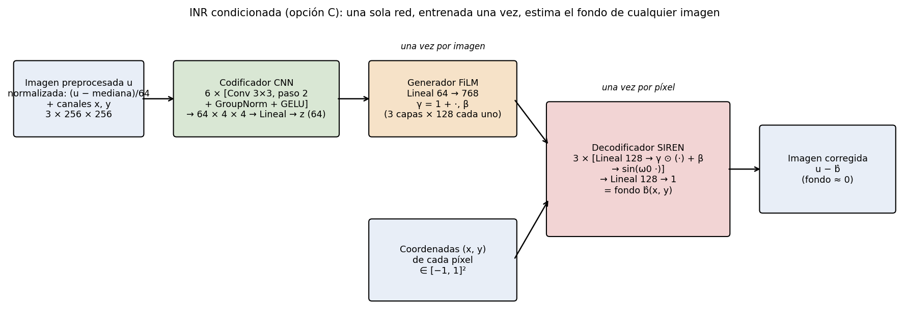
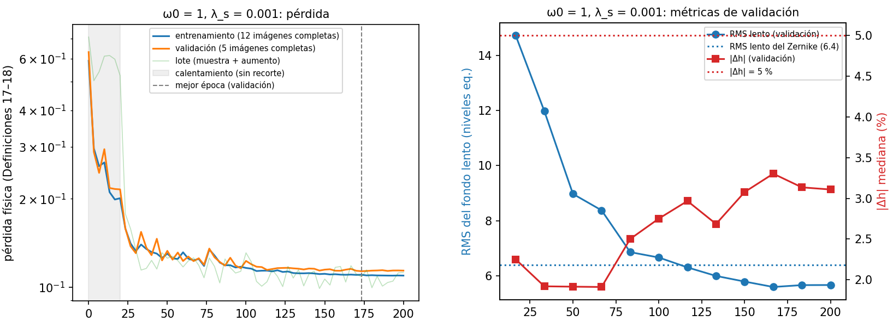
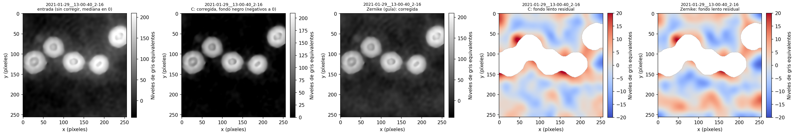
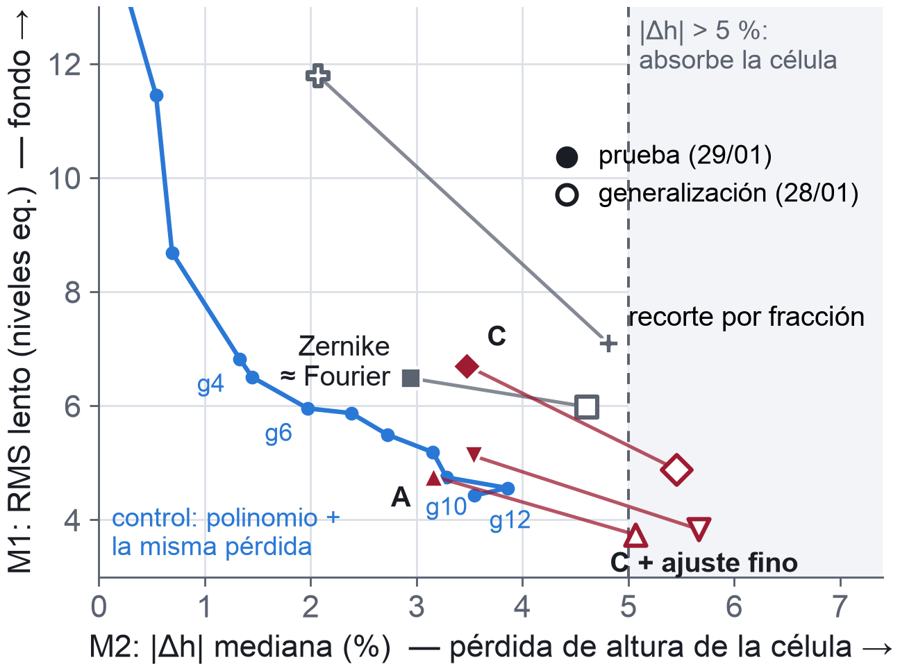

Juan José Escobar · Emmanuel Hernández · Mateo Lopera
SI3014 · Grupo 1 · Universidad EAFIT · noviembre de 2026
Notebook principal, experimentos complementarios y resultados: https://github.com/Jjes07/DeepLearning-Final
Versión actualizada el 12 de noviembre de 2026: añade un control posterior a la entrega (sección 4) y precisa las afirmaciones sobre velocidad, suavidad y el experimento de Fourier.
Problema. La microscopía holográfica digital (DHM) mide la fase que un eritrocito, casi transparente, imprime en la luz: un mapa de su espesor útil para estimar volumen y morfología sin tinciones. La fase reconstruida arrastra un fondo b (inclinaciones y aberraciones del sistema) que sesga las mediciones cuantitativas. Con la fase desenvuelta u,
y se busca b̂ tal que u − b̂ tenga fondo en cero (negro) sin alterar las células. La descomposición no es única (b̂ = u reproduce la medida y borra las células) y no existen imágenes «limpias» para supervisar: solo supuestos físicos (S1 fondo suave, S2 células esparsas, S3 signo de la fase celular, S4 fondo de referencia en cero) seleccionan una solución. Los ajustes polinomiales clásicos (Zernike) se sesgan hacia las células, y la SIREN del código guía las absorbe.
Objetivo general. Desarrollar y entrenar una red neuronal informada por la física, basada en representaciones neuronales implícitas (INR), que estime y compense el fondo de imágenes de fase de eritrocitos preservando la morfología y el perfil de fase de las células.
Objetivos específicos. (1) Fundamentar matemática y físicamente las INR sinusoidales y traducir los supuestos S1–S4 en arquitectura y pérdidas. (2) Caracterizar y seleccionar un subconjunto representativo y sin fuga de información. (3) Validar cuantitativamente la reducción del fondo y la preservación de las células frente a líneas base, incluso en datos de otro día.
Origen. Castañeda, Trujillo y Doblas (2024): DHM fuera de eje (láser de 532 nm, objetivo 40×/0,65 NA), 36.864 recortes PNG de 256×256 y 8 bits con su fase, aumentados con rotaciones y volteos. Datos públicos en OSF.
Hallazgos que condicionaron el diseño. (i) Fuga en la partición original: los volteos son copias exactas, los 16 recortes de un campo forman un mosaico y los 4 campos de una adquisición son la misma escena rotada; la unidad independiente es la adquisición. (ii) Fase envuelta: los niveles de gris son consistentes con φ = 2πg/255 − π y presentan saltos de 2π dentro de las células (fig. 1).
Preprocesamiento. u = −(255/2π)·𝒰(2πg/255 − π): se desenvuelve (𝒰, Herráez et al., 2002), se invierte el signo (aquí las células quedan bajo el fondo) y se trabaja en niveles de gris equivalentes (1 niv. ≈ 0,0246 rad) sin el tope de 255. El desenvolvimiento es reversible (se verificó que u recupera g exactamente).
Selección y partición. De 3.072 recortes evaluados con métricas automáticas (saltos residuales, rango del fondo, fracción celular) salieron 40 candidatos; se eligieron 22 por inspección visual y se repartieron 12/5/5, estratificando por rango del fondo (semilla 42), cada uno de una adquisición distinta. Una prueba de similitud por FFT de todos contra todos (con control positivo) confirmó que no hay fuga. Para generalización se tomaron 8 recortes de otro día, con defectos visibles (tabla 1). Las métricas usan máscaras de referencia célula/fondo calculadas una sola vez con un ajuste polinomial robusto, independientes del modelo.

| Conjunto | Recortes | Día | Uso |
|---|---|---|---|
| Entrenamiento | 12 → 120* | 29/01 | ajustar pesos |
| Validación | 5 | 29/01 | hiperparámetros y selección |
| Prueba | 5 | 29/01 | evaluación final |
| Generalización | 8 (3 escenas) | 28/01 | datos de otro día, no vistos |
Alternativas. (A) una SIREN optimizada por imagen: sencilla, pero tarda ∼4,3 s por imagen y no aprende entre imágenes; (B) U-Net: rápida, pero no garantiza un fondo suave y puede copiar las células (descartada); (C) INR condicionada: una sola red, entrenada una vez, que corrige una imagen nueva en una pasada. Se eligió C, con A como referencia y plan B.
Arquitectura. (fig. 2) Con ũ = (u − med u)/64, un codificador CNN con canales de coordenadas (CoordConv; 6 bloques Conv 3×3 paso 2 + GroupNorm + GELU) produce z ∈ ℝ64; un generador FiLM lo convierte en escalas y desplazamientos que modulan una SIREN de 3 capas de 128 neuronas:
El decodificador es idéntico a la SIREN guía, así que las diferencias con ella se deben al condicionamiento y a la pérdida. ω0 = 1 favorece los fondos lentos (S1), pero no los garantiza: FiLM escala la frecuencia de cada neurona, y lo que la limita es la penalización del laplaciano. FiLM genera 768 modulaciones en lugar de los 33.537 pesos de una hiperred: más estable con pocos datos.

| Método | Parámetros ajustados por imagen | Tiempo/imagen | Prueba | Generalización | ||
|---|---|---|---|---|---|---|
| M1 | M2 (%) | M1 | M2 (%) | |||
| Pistón (resta la mediana) | 1 | 0,4 ms | 18,18 | 0,00 | 20,53 | 0,00 |
| Polinomio de grado 3 (recorte duro) | 10 | 67 ms | 10,37 | 1,19 | 9,29 | 2,01 |
| Zernike (código guía) | 15 | 2,12 s | 6,49 | 2,94 | 5,98 | 4,60 |
| SIREN ω0 = 1 (código guía) | 33.537 | 4,45 s | 4,23 | 12,29 | 3,83 | 12,53 |
| A: SIREN por imagen + pérdida física | 33.537 | 4,34 s | 4,76 | 3,16 | 3,74 | 5,07 |
| C: INR condicionada (modelo final) | 0 (284.033 compartidos) | 6,3 ms | 6,70 | 3,47 | 4,88 | 5,45 |
| C + ajuste fino (100 iteraciones) | 34.305 | 1,40 s | 5,12 | 3,54 | 3,83 | 5,67 |
| Corrección de Fourier sobre Zernike† | 15 (41.261 compartidos) | — | 6,47 | 2,91 | 6,07 | 4,59 |
| SIREN por imagen, recorte por fracción‡ | 33.537 | 7,47 s | 7,10 | 4,81 | 11,79 | 2,07 |
| Control: polinomio de grado 6 + la misma pérdida física§ | 28 | 0,17 s | 5,96 | 1,97 | 4,66 | 3,81 |
| Control: polinomio de grado 10 + la misma pérdida física§ | 66 | 0,40 s | 4,75 | 3,28 | 3,56 | 5,03 |
experiments/): †una CNN predice coeficientes de Fourier de baja frecuencia que corrigen el fondo Zernike (12 recortes de entrenamiento); su diferencia con el Zernike es un desplazamiento constante del fondo (+0,74 niv. de media, misma desviación). ‡Misma red que A, pero la pérdida excluye siempre el 30 % de píxeles con mayor residuo en lugar de usar el umbral por ruido (tiempo en GPU, RTX 3060). §Control posterior a la entrega y no ciego (experiments/EritroFase-Control.ipynb): tiempo en CPU, en otro equipo; M2 no evalúa las células cortadas por el borde, donde el control absorbe (sección 4).Pérdida física, sin etiquetas. Con el residuo r̃ = ũ − b̃ y el umbral τ = κσ̂ (κ = 3, σ̂: ruido del fondo),
con ρ la función de Charbonnier. El recorte anula el gradiente de los píxeles con |r̃| > τ (las células, S2), el segundo término penaliza residuos negativos (S3), el laplaciano impone suavidad (S1), y wi = 0 a menos de d = 6 px de un residuo > τ apaga también bordes y halos (exclusión por vecindad).
Entrenamiento. Adam (10−3, coseno hasta 10−5), 6.000 pasos, lotes de 4 imágenes × 16.384 píxeles, 10 % inicial de calentamiento con Charbonnier completa (evita que la red «abandone» regiones), ≈ 2,1 min por corrida en una RTX 4060 Laptop. Rejilla ω0 ∈ {1, 3}, λs ∈ {10−4, 10−3}; regla fijada de antemano: entre las configuraciones con |Δh| ≤ 5 % en validación, la de menor fondo lento ⇒ ω0 = 1, λs = 10−3. La versión 1 (12 imágenes, sin exclusión ni calentamiento) presentó sobreajuste (fondo lento 6,9 niv. en entrenamiento frente a 13,8 en validación) y absorbió células; esa evidencia motivó la versión 2. Por eso la prueba de la versión 2 no es ciega, y se declara.
Métricas (sin verdad conocida). M1, RMS del fondo lento: residuo en la máscara de fondo suavizado con una gaussiana de σ = 8 px (ideal 0). M2, cambio de altura local de cada célula frente a su anillo de fondo, Δh = (h(u − b̂) − h(u))/h(u); se demuestra que es invariante a errores afines del fondo. Solo se calcula en células completas: de las 104 de validación, prueba y generalización, 68 están cortadas por el borde y quedan fuera. Criterio de éxito fijado antes de entrenar: |Δh| ≤ 5 % y M1 menor o igual que la mejor línea base que cumpla esa cota.
Entrenamiento y validación. Las pérdidas de entrenamiento y validación bajan juntas, sin sobreajuste (fig. 3; la de validación termina a 0,4 % de su mínimo), y el fondo lento es igual en ambos conjuntos (5,71 y 5,69 niv.): la ampliación de datos eliminó la brecha de la versión 1. En validación, C deja menos fondo que el Zernike (5,69 frente a 6,39 niv.) con |Δh| = 3,21 % (Zernike: 2,55 %); con otras dos semillas deja 6,16 y 6,35 niv.
| Variante | M1 (niv.) | M2 (%) |
|---|---|---|
| Base (ω0 = 1, λs = 10−3, κ = 3, d = 6) | 5,69 | 3,21 |
| Semillas 43 / 44 | 6,16 / 6,35 | 3,22 / 2,80 |
| Sin exclusión por vecindad | 5,89 | 4,06 |
| Sin recorte ni exclusión (Charbonnier) | 10,61 | 7,39 |
| λs × 3 / λs × 10 | 6,87 / 8,05 | 1,43 / 0,67 |
| κ = 2 / κ = 4 | 7,75 / 5,81 | 1,41 / 3,72 |
| d = 12 | 8,63 | 1,46 |
| 15.000 pasos | 5,72 | 4,11 |
| Zernike (referencia) | 6,39 | 2,55 |
Prueba. (tabla 2, fig. 5) La pérdida física reduce la absorción unas 4 veces con la misma arquitectura: la SIREN guía quita 12,29 % de la altura de las células; A, 3,16 %, con un fondo lento parecido (4,23 frente a 4,76 niv.). A y C con ajuste fino cumplen el criterio de éxito. C cumple la cota de altura (3,47 %), pero no la de fondo: deja 0,21 niv. más que el Zernike, una diferencia menor que la variación entre semillas (0,67 niv.), así que con estos datos no hay una diferencia concluyente. A cambio, C corrige una imagen en 6,3 ms en GPU sin ajustar nada por imagen; en CPU, el Zernike del código guía (una implementación iterativa) tarda 2,12 s y el polinomio robusto, 67 ms. Visualmente, el fondo corregido por C es negro y sin manchas con forma de célula; el residuo se concentra en bordes y en una franja junto a las células (fig. 4).


13-00-40_2-16. De izquierda a derecha: entrada; corrección con C en la visualización final (fondo negro); corrección con el Zernike; fondo lento residual (M1) de C y del Zernike, en la máscara de fondo (ideal: blanco).Ablación (tabla 3). Sin recorte, el modelo empeora en las dos métricas: es el término decisivo, como predice la anulación del gradiente de las células. La exclusión por vecindad ayuda en la dirección esperada, pero su efecto (0,85 puntos) no supera el umbral de 1 punto fijado. λs, κ y d mueven el punto de operación de forma predecible: más suavidad o un umbral más bajo protegen la célula a costa de dejar más fondo. Entrenar más (15.000 pasos) no mejora el fondo y aumenta la absorción. Ningún cambio mejoró a la base en las dos métricas a la vez más allá de la variación entre semillas, así que se conservó.

Generalización (otro día, nunca usado para decidir). El fondo generaliza: C deja 4,88 niv. frente a 5,98 del Zernike (menos en 7 de 8 imágenes), incluso menos que en prueba. La preservación empeora para todos los métodos (el Zernike pasa de 2,94 a 4,60 %) y los métodos con INR superan la cota (C: 5,45 %). La corrección de Fourier queda igual al Zernike dentro de la variación entre semillas, en los dos conjuntos.
Variante paralela del grupo. Misma SIREN que A, pero la pérdida recorta una fracción fija de píxeles (como el código guía): en prueba, 7,10 niv. y 4,81 %, sin mejorar al Zernike en ninguna imagen; en el otro día conserva mejor la célula (2,07 %) a costa de casi duplicar el fondo del Zernike. Las pérdidas difieren en más términos, así que no es un experimento controlado de la regla de recorte.
Control posterior a la entrega. La comparación de la tabla 2 cambia a la vez la familia de funciones del fondo y la pérdida. Para separarlas se ajustó, sin red, un polinomio de grado 1 a 12 con la misma pérdida (3) y los hiperparámetros del modelo final. Con M1 y M2, su frontera pasa por A y queda por debajo de C (fig. 5): con grado 6 (28 coeficientes) mejora a C en las dos métricas en 5 de 5 imágenes de prueba, y con grado 10 queda a la par de A. No es un método mejor: absorbe las células cortadas por el borde, que M2 no evalúa (con grado 6, 19 de 68 pierden más del 10 % de altura y ninguna de las 36 interiores), algo que no pudo medirse en A ni en C porque sus fondos no se guardaron. El control también muestra que la exclusión por vecindad deja el fondo corregido desplazado hacia arriba (media de +2,30 niv. en C); sin esa constante, C dejaría menos fondo que el Zernike (≈ 5,6 frente a 6,5 niv., estimado). Es consistente con que el aporte medible del trabajo sea la pérdida física, y no la representación neuronal.
Hallazgos. (1) La partición original tiene fuga y la fase está envuelta: se construyó una selección por adquisición sin fuga y un preprocesamiento reversible. (2) Sin verdad conocida, hacen falta métricas locales que separen fondo y célula. (3) Las restricciones físicas, sobre todo el recorte por umbral, reducen la absorción de una INR unas 4 veces. (4) Una sola red (C) logra calidad del orden del Zernike con inferencia de milisegundos, y el compromiso fondo–célula se controla con λs, κ y d. (5) Con M1 y M2, un polinomio ajustado con la misma pérdida iguala a la red: lo que estas métricas permiten atribuir al trabajo es la pérdida física.
Cumplimiento de objetivos. General: sí, con matices; en prueba A cumple el criterio completo y C la cota de altura, pero en generalización ambos superan el 5 %. Específico 1: sí (supuestos S1–S4 convertidos en pérdidas y evaluados por ablación). Específico 2: sí (selección 12/5/5 + 8 sin fuga). Específico 3: sí, con limitaciones (métricas validadas con casos sintéticos; 6 líneas base en dos dominios).
Limitaciones. Pocas imágenes (5 + 8, con 12 células evaluables por conjunto): los resultados son evidencia consistente con las hipótesis, no una demostración concluyente. La prueba de la versión 2 no fue ciega, y el control es posterior a la entrega. M2 no evalúa las células cortadas por el borde. Las máscaras de referencia son heurísticas y no hay verdad conocida en datos reales. El modelo final usa una semilla. Un solo dataset y microscopio; la escala en radianes es una hipótesis. Los tiempos comparan CPU y GPU.
Trabajo futuro. Evaluar una sola vez en las 36 adquisiciones del mismo día que pasan los filtros de selección y nunca se usaron; medir las células de borde en todos los métodos; estimar el fondo sobre el campo completo de 1024 × 1024; entrenar con más días de adquisición; y comparar de forma controlada la base de Fourier y la regla de recorte.
Referencias. Castañeda, Trujillo y Doblas (2024), Data in Brief 54, 110424, doi:10.1016/j.dib.2024.110424 · Chan et al. (2021), π-GAN, CVPR, arXiv:2012.00926 · Herráez et al. (2002), Appl. Opt. 41(35), 7437–7444, doi:10.1364/AO.41.007437 · Huang y Cao (2023), Opt. Express 31(8), 12520–12533, doi:10.1364/OE.488201 · Liu et al. (2018), CoordConv, NeurIPS, arXiv:1807.03247 · Perez et al. (2018), FiLM, AAAI, arXiv:1709.07871 · Sitzmann et al. (2020), SIREN, NeurIPS, arXiv:2006.09661 · Tancik et al. (2020), NeurIPS, arXiv:2006.10739 · Tang et al. (2023), Opt. Lasers Eng. 168, 107671, doi:10.1016/j.optlaseng.2023.107671 · Xu, Cao y Sun (2025), Adv. Photonics 7(6), 066013, doi:10.1117/1.AP.7.6.066013.